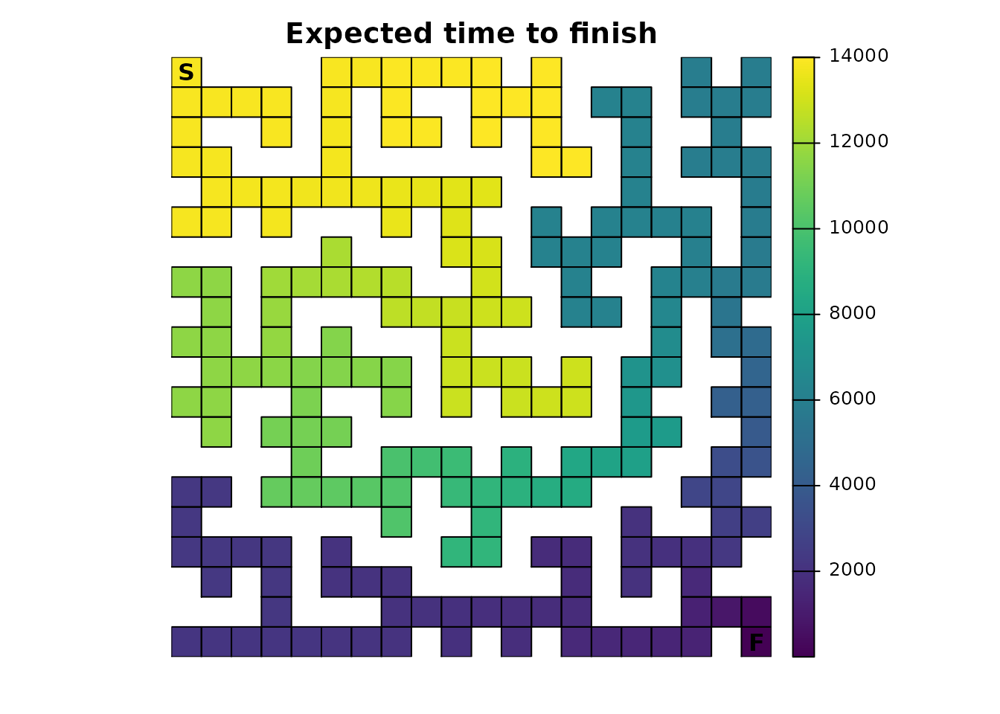
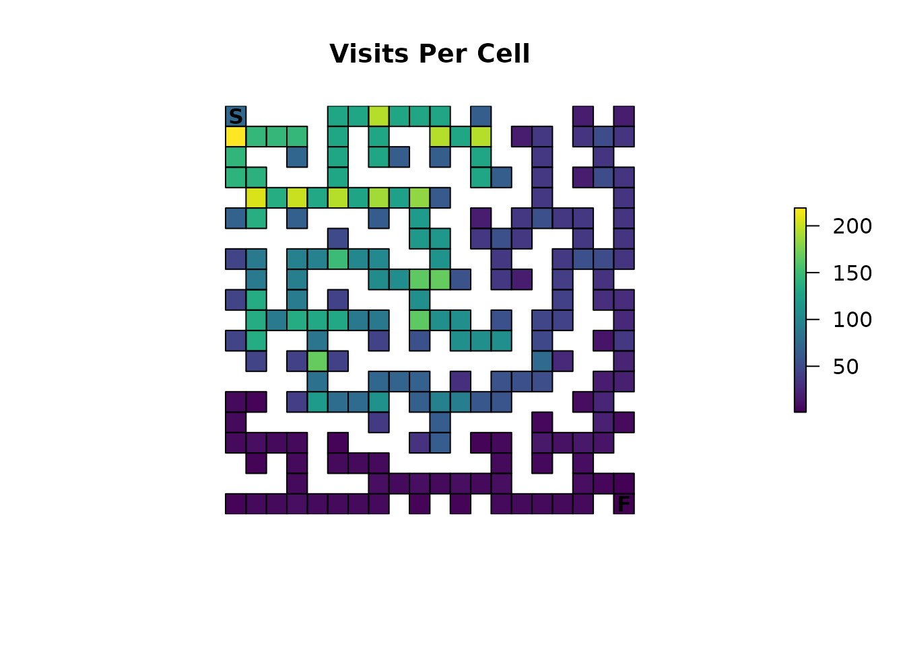

Introduction
This example shows how to use and interpret different absorbing Markov chain metrics with a perfect maze. A perfect maze is a maze that has no loops, every point is reachable, and there is only a single path between any two points. The advantage of an example like this is that it makes it easier to visually and numerically reason about what the package is doing.
Setup
First, let’s setup up a resistance map for our maze.
maze = matrix(
c(1,1,1,1,0,1,0,1,0,1,0,1,0,0,1,1,1,0,0,1,
0,1,0,1,1,1,0,1,1,1,1,1,1,0,1,0,1,1,0,1,
0,1,0,0,1,0,0,0,0,0,1,0,0,0,0,0,1,0,0,1,
0,1,1,0,1,1,0,1,1,1,1,0,1,0,1,0,1,1,1,1,
0,0,0,0,1,0,0,1,0,0,1,1,1,1,1,0,0,0,0,1,
1,1,1,1,1,0,1,1,0,1,1,0,1,0,1,0,1,1,0,1,
1,0,0,0,1,0,0,1,0,0,1,0,0,0,1,0,0,1,0,1,
1,1,1,0,1,1,0,1,1,0,1,1,0,1,1,1,0,1,1,1,
1,0,1,0,1,0,0,0,1,0,0,0,0,1,0,0,0,0,1,0,
1,0,0,0,1,1,1,0,1,1,1,1,0,1,1,0,1,0,1,1,
1,1,1,0,1,0,1,1,1,0,1,0,0,0,1,1,1,0,1,0,
0,1,0,0,0,0,0,0,1,0,1,1,0,1,1,0,0,0,1,1,
1,1,1,1,0,1,1,0,0,0,0,1,0,0,1,0,1,0,1,0,
0,0,0,1,0,0,1,1,1,0,1,1,0,1,1,0,1,1,1,1,
0,1,0,0,0,1,1,0,1,0,0,0,0,1,0,0,0,0,0,1,
0,1,1,1,1,1,0,0,0,0,1,1,1,1,0,1,1,1,0,1,
0,0,0,0,0,1,0,1,1,1,1,0,1,0,0,0,1,0,0,1,
1,1,0,1,0,1,1,1,0,0,0,0,0,0,1,0,1,1,1,1,
0,1,1,1,0,0,0,1,1,1,0,1,0,1,1,1,1,0,1,0,
1,1,0,1,1,1,1,1,0,1,1,1,1,1,0,1,0,0,1,1),
nrow = 20
)
maze <- raster(maze, xmn = 0.5, xmx = ncol(maze) + 0.5, ymn = 0.5, ymx = nrow(maze) + 0.5)
maze[maze==0] <- NA
#
# Get info about the shortest path through the maze using gdistance
#
points <- xyFromCell(maze, c(1, 400))
lcd <- (function() {
tr <- transition(maze, function(x) 1/mean(x), 4)
tr <- geoCorrection(tr)
list(dist = costDistance(tr, points),
path = shortestPath(tr, points[1, ], points[2, ], output="SpatialLines"))
})()
# Setup a simple color palette
vir_col <- viridis(3)
# Basic maze layout
plot(maze, main = "Resistance", col = vir_col[2], axes = FALSE, box = FALSE, asp = 1)
plot(rasterToPolygons(maze), border = 'black', lwd = 1, add = TRUE)
lines(lcd$path, col = vir_col[3], lw = 3)
points(points, pch = c('S', 'F'), cex = 1, font = 2)
Now, create an absorption map where the finish point is our only source of absorption. It will have an absorption value of 1.0, which means that once this point is entered, it cannot be left.
# End of maze
maze_end <- maze * 0
maze_end[20, 20] <- 1
plot(maze_end, main = "Absorption", col = vir_col[c(2, 3)], axes = FALSE, box = FALSE, asp = 1)
plot(rasterToPolygons(maze_end), border = 'black', lwd = 1, add = TRUE)
points(points, pch = c('S', 'F'), cex = 1, font = 2)
Create the samc Object
tr <- list(fun = function(x) 1/mean(x), dir = 4, sym = TRUE)
samc_obj <- samc(maze, maze_end, tr_args = tr)
start <- locate(samc_obj, data.frame(x = 1, y = 20))
finish <- locate(samc_obj, data.frame(x = 20, y = 1))The data has been setup to assume a simple random walk. There is no “memory” of the past to stop the individual from going back to dead ends, there is no ability to “look ahead” and see dead ends, and the individual will always move to a different cell every timestep.
Note the use of only four directions. This prevents diagonal movements in the maze, which in turn will have important consequences for short-term metrics (shown later).
We also get the start and finish locations from the samc object. It’s important to remember that the results from xyFromCell() (used above) do NOT work for samc objects; we must use the locate() function.
Time to finish
First, we simply want to know how long we expect it to take for someone to finish the maze. The survival() function calculates the expected time to absorption. Since the maze has only one absorption point representing the finish point, this means thatsurvival() can be interpreted as the expected time to finish the maze.
survive <- survival(samc_obj)
plot(map(samc_obj, survive), col = viridis(256), main = "Expected time to finish", axes = F, box = F, asp = 1)
plot(rasterToPolygons(maze_end), border = 'black', lwd = 1, add = TRUE)
points(points, pch = c('S', 'F'), cex = 1, font = 2)
The result actually shows us the expected time to finish for every point in the maze. If we’re interested in just the start point, we can extract that information from the vector:
survive[start]
#> [1] 13869When there is only a single point of total absorption, like this example, survival() and cond_passage() are nearly identical when the destination for cond_passage() is set to the point of absorption (the finish point):
cond <- cond_passage(samc_obj, dest = finish)
cond[start]
#> 1
#> 13868It turns out that the cell in the map corresponding to our finish point is not actually an absorbing state; it’s still a transient state. Absorption essentially occurs when the individual is removed from the map one time step later since it can’t go anywhere else in our example. So cond_passage() reports how long it takes to reach the final cell, and survival() tells us how long it takes us to reach the final cell and then be removed from it.
A couple things to keep in mind: - In more complicated scenarios with multiple points of absorption, then survival() will have different results and a different interpretation for the maze. - cond_passage() normally does not work when there are states that lead to total absorption. The only exception is when there is a single instance of a state leading to total absorption present and the dest parameter is set to it. In that case, the absorption state is actually effectively ignored. This is why cond_passage() works as shown, but if you were to attempt to change the dest parameter to a different location, it would fail. cond_passage() can still be used for other dest values, but first the absorption value would have to be changed to something other than 1.
Probability of visiting a cell
If we’re interested in knowing the probability that a particular cell (or cells) is visited at least once, then we can use the dispersal() function:
disp <- dispersal(samc_obj, origin = start)
#>
#> Cached diagonal not found.
#> Performing setup. This can take several minutes... Complete.
#> Calculating matrix inverse diagonal...
#>
Complete
#> Diagonal has been cached. Continuing with metric calculation...
plot(map(samc_obj, disp), col = viridis(256), main = "Probability of Visit", axes = FALSE, box = FALSE, asp = 1)
plot(rasterToPolygons(maze_end), border = 'black', lwd = 1, add = TRUE)
points(points, pch = c('S', 'F'), cex = 1, font = 2)
In order to complete the maze, the individual has to visit every cell along the path to the exit, so all of those cells will have a probability of 1.0. The farther away from this path a cell is located, the lower the probability it will be visited. Additionally, the closer the individual gets to the finish, the less likely they will spend time taking incorrect routes before stumbling upon the finish. There’s also the possibility for scenarios like the one where the individual is near the finish and then manages to stumble all the way back to the start. These different aspects contribute to more time spent near the start point, on average, which in turn means that cells near the start have a higher probability of being visited.
If you didn’t catch it in the previous paragraph, we can use our results from the dispersal() function to identify the route through the maze:
# Ideally, we would just use `as.numeric(disp == 1)`, but float precision means
# that what we think is `1` isn't always `1` with computers, so it won't always
# work. We work around it by subtracting 1 and seeing if the result fits within
# a very small tolerance
tolerance = sqrt(.Machine$double.eps) # Default tolerance in functions like all.equal()
print(tolerance)
#> [1] 1.490116e-08
disp_sol <- as.numeric(abs(disp - 1) < tolerance)
plot(map(samc_obj, disp_sol), col = vir_col[c(2, 3)], main = "Solution Using Dispersal()", axes = FALSE, box = FALSE, asp = 1)
plot(rasterToPolygons(maze_end), border = 'black', lwd = 1, add = TRUE)
points(points, pch = c('S', 'F'), cex = 1, font = 2)Like the survival() function, we see an important caveat. The visitation probabilities don’t include time 0, so while in our first figure it looked like the starting cell had a probability of 1, it’s actually slightly less and it just wasn’t apparent with the color scale:
disp[start]
#> 1
#> 0.9864865Visits per cell
The package can be used to see how many times each cell in the maze is expected to be visited on average. This is done using the visitation() metric:
visit <- visitation(samc_obj, origin = start)
plot(map(samc_obj, visit), col = viridis(256), main = "Visits Per Cell", axes = FALSE, box = FALSE, asp = 1)
plot(rasterToPolygons(maze_end), border = 'black', lwd = 1, add = TRUE)
points(points, pch = c('S', 'F'), cex = 1, font = 2)
It should go without saying, but the finish point will only be visited once:
visit[finish]
#> [1] 1Expected location
Using the distribution() function, we can predict where an individual might be in the maze at a given time:
dist <- distribution(samc_obj, origin = start, time = 20)
plot(map(samc_obj, dist), col = viridis(256), main = "Location at t=20", axes = FALSE, box = FALSE, asp = 1)
plot(rasterToPolygons(maze_end), border = 'black', lwd = 1, add = TRUE)
points(points, pch = c('S', 'F'), cex = 1, font = 2)
Notice something odd? Let’s increment time from 20 to 21:
dist <- distribution(samc_obj, origin = start, time = 21)
plot(map(samc_obj, dist), col = viridis(256), main = "Location at t=21", axes = FALSE, box = FALSE, asp = 1)
plot(rasterToPolygons(maze_end), border = 'black', lwd = 1, add = TRUE)
points(points, pch = c('S', 'F'), cex = 1, font = 2)
Earlier it was mentioned that using only 4 directions for the transition function would have consequences. It turns out that without either diagonal transitions or some form of fidelity (the possibility of an individual not moving), there will be this alternating pattern where a cell can and then cannot be occupied. It’s easiest to reason about the effect by running the same function for timesteps 1-5 and visualizing it, an exercise that will be left to those interested.
Other metrics
There are a couple metrics that have not been covered yet: absorption() and mortality(). It turns out they don’t do anything useful with the example maze provided thus far, but they will be useful later. mortality() only would tell us that we have a 100% probability of absorption at the finish point; it will be more useful when we have multiple locations with absorption probabilities. absorption() is a little more complicated to interpret, but is only useful when we have different types of absorption.
Occupancy
Many of the metrics offer a more advanced and flexible option for setting an initial state in the absorbing Markov chain. Inputs to the occ parameter (short for occupancy) can essentially be used as an alternative to the origin parameter. Here is an example occ map that represents the scenario we have been testing so far:
# End of maze
maze_occ <- maze * 0
maze_occ[1, 1] <- 1
plot(maze_occ, main = "Occupancy", col = vir_col[c(2, 3)], axes = FALSE, box = FALSE, asp = 1)
plot(rasterToPolygons(maze_occ), border = 'black', lwd = 1, add = TRUE)
points(points, pch = c('S', 'F'), cex = 1, font = 2)If we take this and run it in the survival() metric, we see that it produces the same result we got before:
survival(samc_obj, occ = maze_occ)
#> [1] 13869
survive[start]
#> [1] 13869But now, we can do test more interesting scenarios. Let’s try putting 3 people at the start of the maze:
# Scenario 1: 3 people start in the maze
maze_occ <- maze * 0
maze_occ[1, 1] <- 3
survival(samc_obj, occ = maze_occ)
#> [1] 41607The interpretation becomes a little trickier here. The survival() metric is essentially calculating the cumulative time spent in the maze for all the individuals. This means that with 3 people starting at the beginning, 3 times as much time is going to be spent in the maze, but that per person, it will still take the same number of time steps to finish as before:
survival(samc_obj, occ = maze_occ) / 3
#> [1] 13869Here’s another scenario where we have 3 people again, but now they start in different corners of the maze:
# Scenario 2: A person starts in each corner of the maze
maze_occ <- maze * 0
maze_occ[1, 1] <- 1
maze_occ[20, 1] <- 1
maze_occ[1, 20] <- 1
plot(maze_occ, main = "Occupancy", col = vir_col[c(2, 3)], axes = FALSE, box = FALSE, asp = 1)
plot(rasterToPolygons(maze_occ), border = 'black', lwd = 1, add = TRUE)
points(points, pch = c('S', 'F'), cex = 1, font = 2)
survival(samc_obj, occ = maze_occ)
#> [1] 21949
Again, we see that the cumulative time spent in the maze is larger than what we had in the original 1 person scenario. However, this time the average time per person spent in the maze decreases:
survival(samc_obj, occ = maze_occ) / 3
#> [1] 7316.333This is because the additional people are now located in corners that are substantially closer to the finish point, so they would be expected to find it faster on average. Just looking at the maze, we might expect that the person starting in the bottom left has the biggest advantage. We can try to visualize this by playing with the time steps parameter in the distrbution() metric:
dist <- distribution(samc_obj, occ = maze_occ, time = 100)
plot(map(samc_obj, dist), col = viridis(256), main = "Location at t=100", axes = FALSE, box = FALSE, asp = 1)
plot(rasterToPolygons(maze_end), border = 'black', lwd = 1, add = TRUE)
points(points, pch = c('S', 'F'), cex = 1, font = 2)A good exercise for the reader might be to try and apply the concepts of the animations vignette to this figure.
Advanced Examples
Our maze can be modified in many interesting ways. For example, we could use a fidelity input to simulate scenarios where the individual pauses to think about their next decision. We can modify the resistance input so that it limits movement into dead ends, which simulates an ability to look ahead, and we can modify it to have multiple solutions. Finally, we can incorporate additional absorption inputs to simulate lethal things like hidden traps. These will all be illustrated in a separate vignette (in progress).